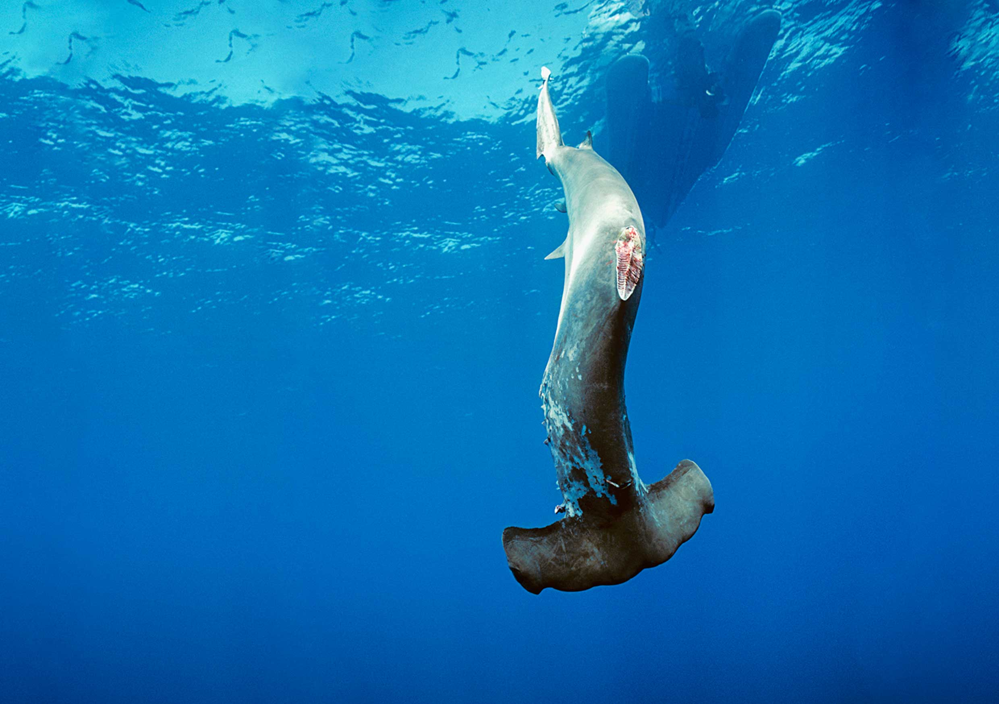
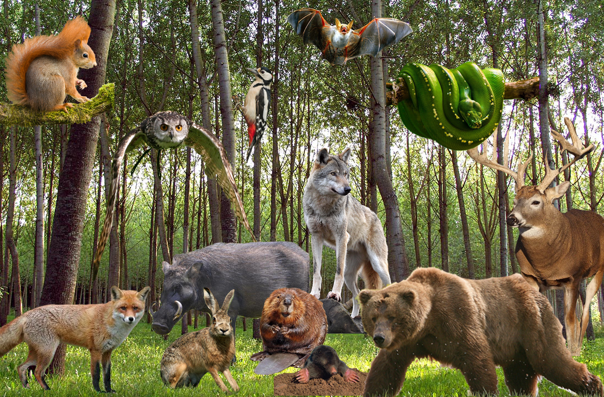

HOW THEY GOT ENDANGERED
What some human do to innocent animals are just so unbelievable. There are a lot of reasons why they are all endangered. One of the most reason is overfishing is also one of the major reasons. Fishers are killing over a hundred million sharks per year for their fins. Just think that all human need is their fins. After they finish cutting off their fins, they throw the body, which is still alive, into the salty water and will starve to death. The second reason is because of human greed. People are killing rhinos for their tusks. A lot of people thinks that animals are dangerous and would threaten our lives, but animals mean no harm if we don’t harm them.

WHY SAVE THEM?
People might ask, why should we spend all that money on wildlife when we could spend it to stop people dying of starvation or disease? Imagine a world where humans are the only species. Scary right, so we should try to prevent that to happen to us. But beyond that, there's a simple reason to save species: because we want to. Animals are our friends. They are the ones who kept Earth the way it is and the only reason why we even exist! The animals kept the jungles and forests alive and full of lively spirits.
